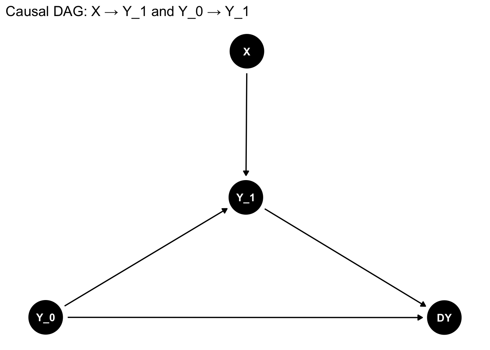

If we assume that both \(X\) and \(Y_0\) directly effect \(Y_1\) then we have the following causal DAG:
library(ggdag)
Attaching package: 'ggdag'
The following object is masked from 'package:stats':
filter
library(ggplot2)# Create the DAG with the specified causal structuredag <-dagify( Y_1 ~ X + Y_0, DY ~ Y_0 + Y_1,exposure ="X"#,# outcome = "Y_1",# labels = c(# "X" = "Treatment",# "Y_0" = "Baseline",# "Y_1" = "Follow-up"# ))# Plot the DAGggdag(dag, text =TRUE) +#, use_labels = "label") +theme_dag() +labs(title ="Causal DAG: X → Y_1 and Y_0 → Y_1")

If we hypothesize the dag above, the marginal association between X and Y_1 will give us the causal effect of X on Y_1:
res <-lm(y1 ~ x, data = data)summary(res)
Call:
lm(formula = y1 ~ x, data = data)
Residuals:
Min 1Q Median 3Q Max
-2.79927 -0.68989 0.01306 0.68758 3.06079
Coefficients:
Estimate Std. Error t value Pr(>|t|)
(Intercept) 0.013908 0.043804 0.317 0.751
x 0.002286 0.062578 0.037 0.971
Residual standard error: 0.9892 on 998 degrees of freedom
Multiple R-squared: 1.337e-06, Adjusted R-squared: -0.001001
F-statistic: 0.001335 on 1 and 998 DF, p-value: 0.9709
As expected, X has no significant treatment effect on Y.
Suppose we want to estimate the effect of X on DY. According to the DAG, Y_0 is a confounder of the relationship between X and DY, so we must adjust for Y_0 to block the backdoor path:
res <-lm(dy ~ x + y0, data = data)summary(res)
Call:
lm(formula = dy ~ x + y0, data = data)
Residuals:
Min 1Q Median 3Q Max
-2.80193 -0.68844 0.00965 0.68644 3.05425
Coefficients:
Estimate Std. Error t value Pr(>|t|)
(Intercept) 0.013891 0.043826 0.317 0.751
x 0.001951 0.062640 0.031 0.975
y0 -1.005249 0.031486 -31.927 <2e-16 ***
---
Signif. codes: 0 '***' 0.001 '**' 0.01 '*' 0.05 '.' 0.1 ' ' 1
Residual standard error: 0.9897 on 997 degrees of freedom
Multiple R-squared: 0.5058, Adjusted R-squared: 0.5048
F-statistic: 510.2 on 2 and 997 DF, p-value: < 2.2e-16